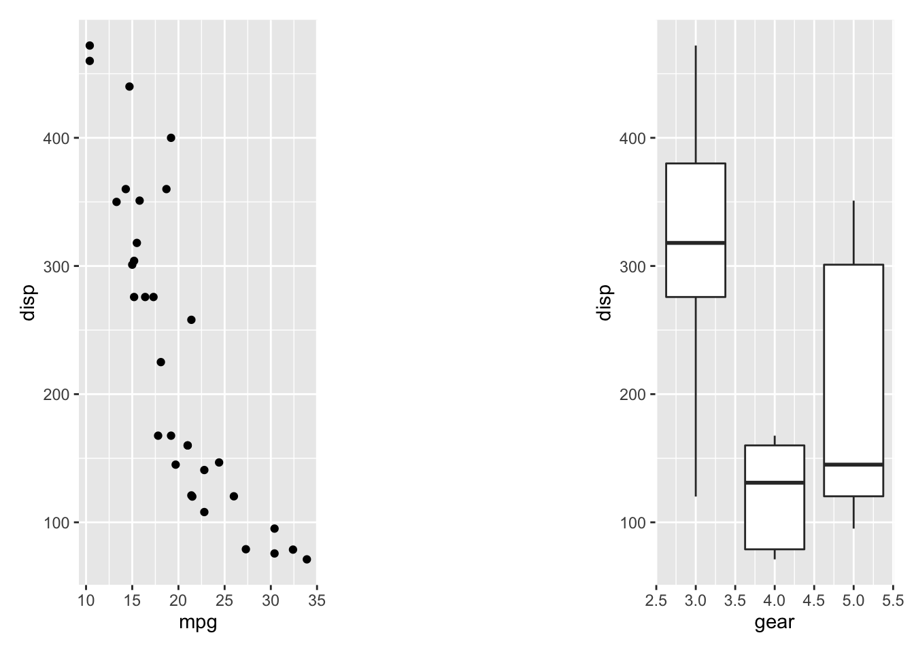
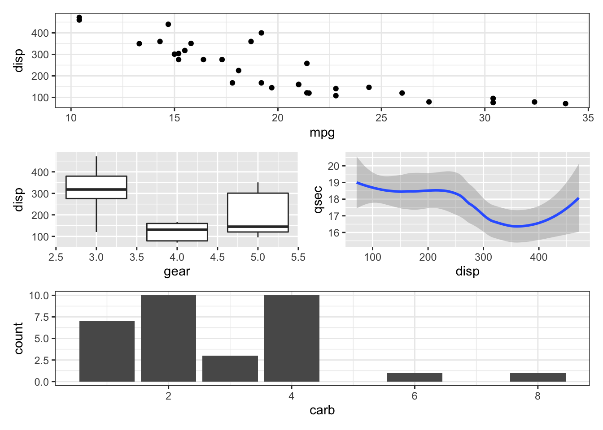

拼图包patchwork使用
王诗翔 · 2018-07-06
patchwork是基于ggplot2的拼图包，因为ggplot2本身没有强大的拼图语法，而一般使用的gridExtra与cowplot的拼ggplot2图形都存在不少问题。
我关注这个包蛮久了，现在Github上的Star数已经远超大部分的R包，但似乎还没有发布到CRAN。我的工作看似跟作图相关，写的博文大多数也如此，但实际对图形的掌控力并不咋的，所以还是要多多学习。
下面进入正题，掌握好ggplot2与patchwork的基本用法，一般的图形都可以搞定了，并必要搞的很复杂。解决问题是关键，认真工作也是关键，画图看起来是，其实不是。
安装
install.packages("patchwork")
# 需要提取安装好devtools包，
# 如果你解决安装和载入包很麻烦，可以试试pacman包，我在简书写了介绍和简单使用
# devtools::install_github("thomasp85/patchwork")导入：
library(pacman)
p_load(patchwork)
# 或
# library(patchwork)例子
patchwork的使用灰常简单，使用+把要拼的图加在一起就可以了。
library(ggplot2)
library(patchwork)
p1 <- ggplot(mtcars) + geom_point(aes(mpg, disp))
p2 <- ggplot(mtcars) + geom_boxplot(aes(gear, disp, group = gear))
p1 + p2我们不用创建对象，也可以像ggplot2本身使用一样相加。
ggplot(mtcars) +
geom_point(aes(mpg, disp)) +
ggplot(mtcars) +
geom_boxplot(aes(gear, disp, group = gear))
另外，可以使用布局函数plot_layout对拼接细节进行更细致地指定，像每个图的范围，图形的排列。
p1 + p2 + plot_layout(ncol = 1, heights = c(3, 1))如果你想要在图形之间添加一些空间，可以使用plot_spacer()填充一个空白格。
p1 + plot_spacer() + p2
增加花括号的使用进行嵌套可以布置更复杂的图形：
p3 <- ggplot(mtcars) + geom_smooth(aes(disp, qsec))
p4 <- ggplot(mtcars) + geom_bar(aes(carb))
p4 + {
p1 + {
p2 +
p3 +
plot_layout(ncol = 1)
}
} +
plot_layout(ncol = 1)
#> `geom_smooth()` using method = 'loess' and formula 'y ~ x'
括号也是可以的：
p3 <- ggplot(mtcars) + geom_smooth(aes(disp, qsec))
p4 <- ggplot(mtcars) + geom_bar(aes(carb))
p4 + (
p1 + (
p2 +
p3 +
plot_layout(ncol = 1)
)
) +
plot_layout(ncol = 1)
#> `geom_smooth()` using method = 'loess' and formula 'y ~ x'高级特性
除了将图形添加到一起，patchwork定义了一些有意思的操作符，，简化了上面的嵌套语法。-操作符将左右两边的对象放在同一个嵌套层，而不是像+号把右边放入左边的嵌套层。
p1 + p2 + p3 + plot_layout(ncol = 1)
#> `geom_smooth()` using method = 'loess' and formula 'y ~ x'
p1 + p2 - p3 + plot_layout(ncol = 1)
#> `geom_smooth()` using method = 'loess' and formula 'y ~ x'现在p1+p2与p3在同一嵌套层。
|与/操作符可以用来水平和垂直布局。
(p1 | p2 | p3) /
p4
#> `geom_smooth()` using method = 'loess' and formula 'y ~ x'子图多的时候同时修改图形比较麻烦，patchwork提供了*与&用来简化代码，它们都可以将同一个操作应用到所有图形。
(p1 + (p2 + p3) + p4 + plot_layout(ncol = 1)) * theme_bw()
#> `geom_smooth()` using method = 'loess' and formula 'y ~ x'
需要注意*只会应用到当前嵌套层。
p1 + (p2 + p3) + p4 + plot_layout(ncol = 1) & theme_bw()
#> `geom_smooth()` using method = 'loess' and formula 'y ~ x'&可以用递归的方式应用到所有层面。